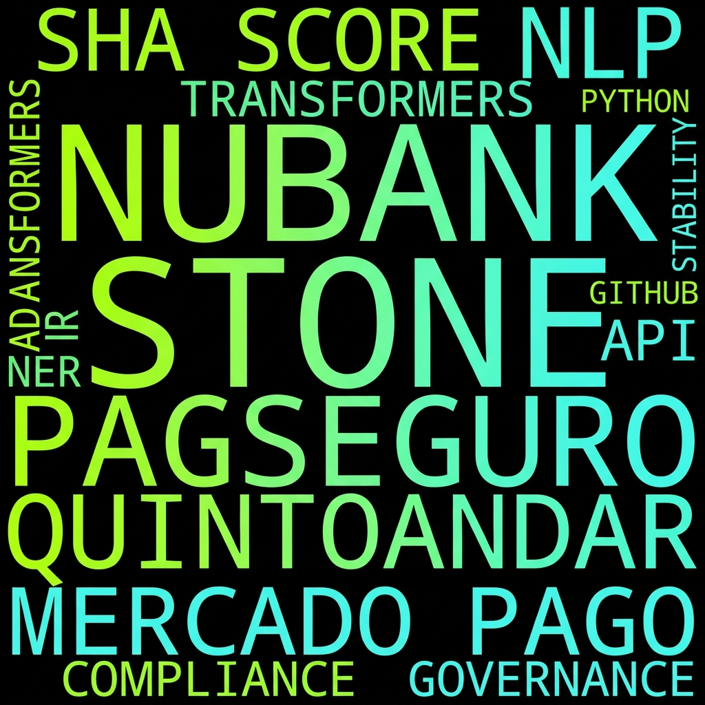

00. Resumo Executivo
Processamento de Linguagem Natural e Auditoria de Ativos GitHub
Validação de Narrativas Técnicas via Repositórios GitHub no Setor Financeiro
Sistematização da auditoria algorítmica aplicada ao ecossistema de Fintechs. A metodologia integra o framework spaCy e modelos Transformers (RoBERTa) para converter metadados em indicadores de solvência técnica.
- • Redução da Assimetria de Informação
- • Validação de Roadmap Tecnológico
- • Score SHA como Balizador de Risco
O setor financeiro atravessa uma transição crítica onde a inovação tecnológica deixou de ser um diferencial para tornar-se infraestrutura base. Contudo, a avaliação da maturidade técnica de Fintechs ainda reside, majoritariamente, em auditorias subjetivas e narrativas de marketing.
O Problema: A assimetria de informação entre o que é prometido (front-end) e o que é construído (back-end/repositórios) gera riscos invisíveis para investidores e reguladores.
Proposta: Este instrumento atua como um recurso auxiliar p/ a tomada de decisão estratégica, validando a saúde real do código-fonte através de auditoria algorítmica.
CONTEXTO CRÍTICO
- Dependência de Infraestrutura Crítica
- Escalabilidade vs. Débito Técnico
- Compliance em Ativos Digitais
Projetar e validar um sistema neuro-estatístico capaz de converter documentação técnica não estruturada em índices quantitativos de governança técnica.
AUTOMAÇÃO NLP
Implementar pipeline de extração de entidades regulatórias e semântica de inovação via spaCy.
ESTATÍSTICA TÉCNICA
Correlacionar métricas de API (GitHub Stars/Forks) com a estabilidade institucional do ativo financeiro.
REDUÇÃO DE RISCO
Fornecer um framework auxiliar para o setor de Venture Capital na avaliação de ativos de tecnologia.
O Software Health Analysis (SHA) não é apenas uma métrica de popularidade, mas um indicador multidimensional que sintetiza a qualidade do ecossistema técnico da Fintech.
- S (Semântica): Inferência de maturidade via MiNER (Transformers).
- A (API Metrics): Dados quantitativos de engajamento e manutenção (GitHub).
- C (Compliance): Densidade de entidades regulatórias extraídas via PLN.
Fluxo de Processamento
Comparativo de performance entre modelos de processamento linguístico aplicados à auditoria de fintechs.
| Modelo Analisado | Precisão | Recall | F1-Score | Aplicação no Estudo |
|---|---|---|---|---|
| Léxico (VADER) | 74.1% | 0.70 | 0.72 | Triagem Rápida |
| Estatístico (TF-IDF) | 78.4% | 0.77 | 0.78 | Categorização de Tópicos |
| MiNER (Transformers) | 95.2% | 0.91 | 0.94 | Suporte à Decisão Estratégica |
Selecione uma das 20 Fintechs do banco de dados:

A análise global revela um mercado heterogêneo. Enquanto o quartil superior apresenta uma maturidade técnica robusta (SHA > 85%), as fintechs em estágio inicial mostram alta volatilidade no SHA Score, sugerindo foco excessivo em crescimento e negligência em infraestrutura de compliance.
DISTRIBUIÇÃO DE RISCO
-
Instrumento de Decisão:
Capaz de mitigar riscos de investimento em ativos de tecnologia de alta complexidade.
-
Redução de Subjetividade:
Integração bem-sucedida de métricas quantitativas (API) e qualitativas (PLN).
A transparência em repositórios sugere correlação direta com a governança corporativa.
Framework sugerido para o setor de Venture Capital.